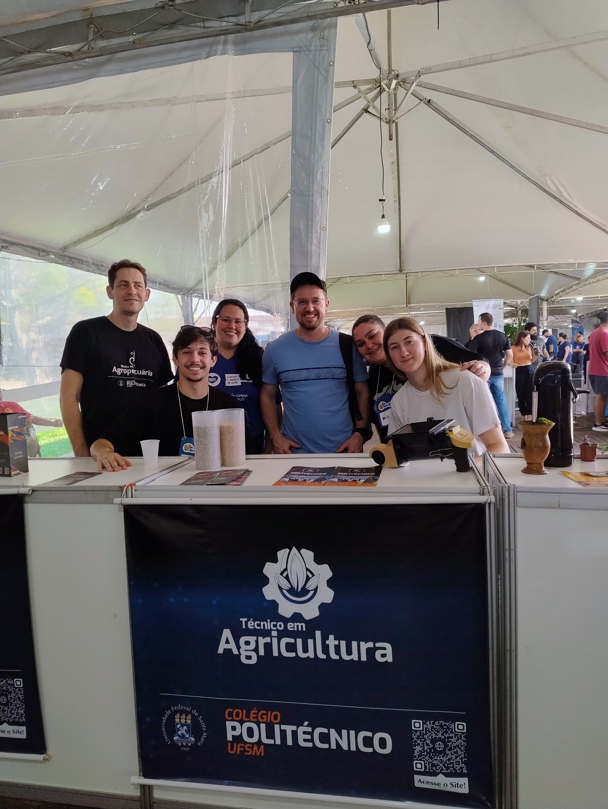
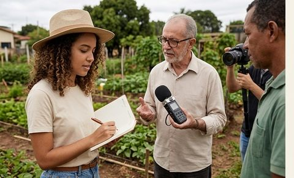
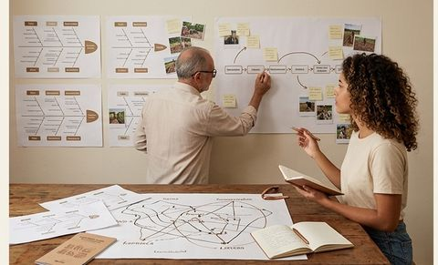
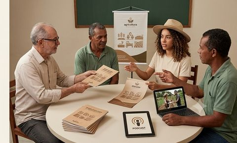
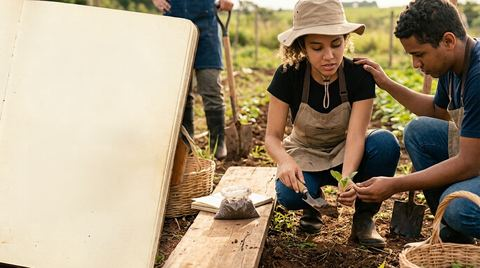
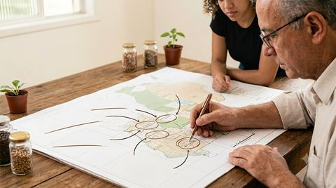
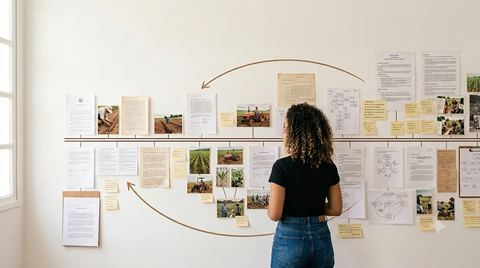
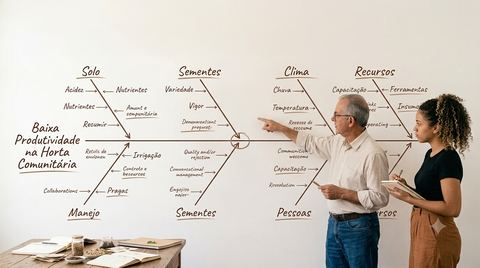
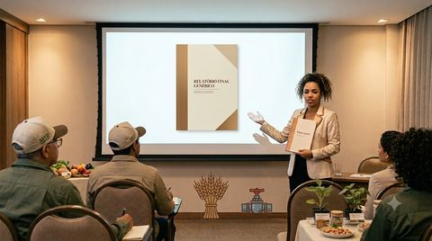
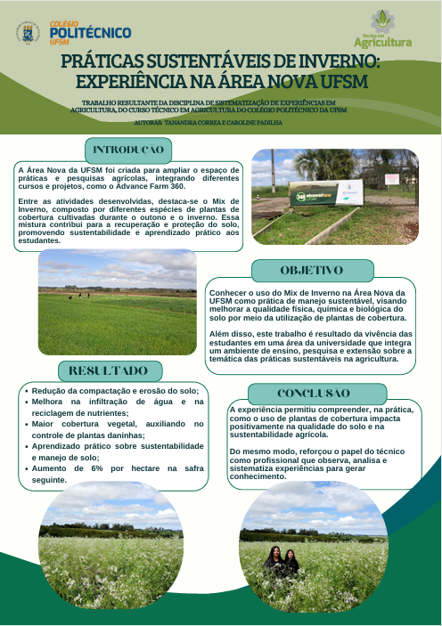

Sistematização de experiências
em agricultura
A disciplina é um projeto único,
encadeado do primeiro ao último encontro.



18 de novembro (data provável)
Seu grupo apresenta a sistematização de uma experiência agrícola vivida, sustenta a interpretação diante da turma e entrega o produto final. Tudo o que vem antes existe para tornar isso possível.

Você vai a campoUma experiência vivida
Até três idas a campo, com registro próprio: caderno, fotografia, entrevista, filmagem.

Você interpretaPor que aconteceu assim
Reconstruir o processo e explicar o que encontrou, com evidência do próprio material.

Você comunicaUm produto que circula
Banner, cartilha, boletim, vídeo ou podcast — apresentado à banca e devolvido ao produtor (se possível).
Exemplos de vídeo de vivência
O registro de campo que seu grupo vai produzir depois da própria vivência, feito por quem cursou a disciplina antes de vocês.

Sistematização de Experiências em Agricultura — Teste de envelhecimento acelerado
Denielle Linhares
▶ Assistir no YouTube ↗

Sistematização de Experiências em Agricultura — Coleta de solo: prática e aprendizado na agricultura
Ana Paula Menezes
▶ Assistir no YouTube ↗
Exemplos de vídeo de vivência

Sistematização de Experiência na Pecuária — O pastoreio rotativo para melhoramento do campo nativo
Daniel Balin
▶ Assistir no YouTube ↗

Sistematização de Experiência — Produção de hortaliças
Ivan James Neves Picada F.
▶ Assistir no YouTube ↗
Sistematizar não é relatar
- Produzir conhecimento a partir de uma prática vivida
- Reconstruir o processo: o que aconteceu, em que ordem, por decisão de quem
- Interpretar criticamente por que aconteceu do jeito que aconteceu
- Devolver o aprendizado a quem viveu a experiência
- Relatório de visita — descreve o que viu e para aí
- Pesquisa — parte de uma hipótese, não da vivência
- Diagnóstico — vai atrás de um problema para resolver
- Propaganda — mostra só o que deu certo
Os cinco tempos
O semestre inteiro está organizado nesta sequência. Em qualquer aula, você sabe em que tempo o trabalho está.

1Viver a experiência
O ponto de partida. Sem vivência registrada não há o que sistematizar.

2As perguntas iniciais
Para que sistematizar, que experiência delimitar, que eixo escolher, com que fontes.

3Recuperar o processo
Reconstruir a história e ordenar a informação coletada por eixo e por período.

4A reflexão de fundo
Analisar, sintetizar, identificar tensões. É aqui que se explica o porquê.

5Os pontos de chegada
Formular conclusões e comunicá-las — inclusive a quem viveu a experiência.
Vídeos sobre o método

Como escolher as melhores experiências para sistematização na extensão rural?
O Extensionista
▶ Assistir no YouTube ↗

Você conhece os eixos da sistematização de experiências?
O Extensionista
▶ Assistir no YouTube ↗
Catorze semanas, três partes
Bases para sistematizar
Viver a experiência
Interpretar e comunicar
Quatro encontros para construir o olhar
Esta parte não é teoria por precaução. Quem chega a campo sem saber o que está procurando registra pouco, e depois não tem material para interpretar.
- A agricultura dentro de um sistema alimentar, a montante e a jusante
- A propriedade como sistema, e seus três eixos: produtivo, social e de comercialização
- Os cinco tempos e a escolha do eixo de leitura
- Roteiro de campo, entrevista e oficina de audiovisual
- Situar qualquer propriedade dentro de uma cadeia
- Desenhar o fluxograma de uma unidade de produção
- Distinguir sistematização de relatório, pesquisa e diagnóstico
- Conduzir uma entrevista com perguntas abertas
No máximo três idas a campo
Todo o trabalho de campo se concentra aqui. Duas saídas com a turma inteira vêm antes da vivência do grupo, para você chegar à sua propriedade com repertório.
Vinícola Velho Amâncio
Primeira experiência coletiva. Registrar amplo: o grupo chega com dois ou três eixos em estudo, não com um escolhido.
Ita dos Parreirais, Itaara
Visita dirigida. Agora você entra na propriedade sabendo o que foi procurar. A comparação entre as duas vira análise.
Vivência própria
Propriedade escolhida pelo grupo, sem professor. Semana a distância, porque a data é combinada com a família.
“E se eu não tenho propriedade para visitar?”
Você sistematiza as duas visitas coletivas. Elas acontecem cedo e sob o mesmo roteiro exatamente por isso. Com dois casos registrados sob um mesmo eixo, o material é equivalente ao de quem conduziu vivência própria.
- Retorno individual a uma das propriedades
- Entrevista complementar, presencial ou a distância
- Fontes documentais e dados oficiais do município
- Aprofundamento do eixo escolhido
Da descrição para a interpretação
É o passo que distingue uma sistematização de um relatório de visita — e o que a maioria dos trabalhos pula.
Comprovação da vivência e interpretação crítica. Distinguir o que o produtor diz, o que ele faz e o que o grupo observou — e entender por que as três coisas às vezes não coincidem.
Sistematização e juventude rural: alguém percorre por inteiro a interpretação que a turma acabou de tentar pela primeira vez.
Escrita assistida no laboratório, montagem do material e da apresentação.
Apresentação para turma e devolutiva a cada propriedade visitada (se possível).
O eixo de leitura
O eixo é o recorte com que você lê a experiência. Duas propriedades iguais, lidas por eixos diferentes, produzem sistematizações diferentes — e as duas podem estar certas.
O eixo não é um problema a resolver. Confundir os dois produz um diagnóstico com aparência de sistematização — o erro mais comum do trabalho.
Não hoje. Cada grupo leva dois ou três eixos em estudo para a primeira saída e fecha a escolha em 16/09. Quem chega à propriedade com o recorte fechado deixa de ver o que não estava procurando.
Três entregas, uma por parte
Comprovação da vivência
Vídeo publicado no fórum e apresentado em aula. Avalia se o grupo esteve em campo, o que escolheu registrar e se mostrou potencialidades e limites.
Relatório da sistematização
Texto seguindo os cinco tempos. Avalia a reconstrução do processo vivido e a consistência da interpretação diante das evidências.
Socialização
Produto e apresentação avaliados juntos, mais o comprovante de devolutiva à propriedade. São a mesma entrega: o material que circula e a conversa que ele sustenta.
Escolha pelo público, não pela facilidade
O grupo define o formato até 07/10. Os critérios de avaliação são os mesmos para todos.
Banner técnico
Apto a mostras e à Jornada Acadêmica Integrada.
Cartilha
Material curto e ilustrado, entregue impresso ao produtor.
Boletim de campo
Duas páginas sobre uma prática replicável.
Vídeo documental
Peça editada, distinta do vídeo de comprovação da vivência.
Podcast
Episódio com o produtor como entrevistado.
Outro formato
Mediante aprovação, com justificativa de público e de circulação.
A pergunta que decide o formato
Quem precisa ver isso, e onde essa pessoa está?

Tanandra e Carol
Práticas sustentáveis de inverno
Ver PDF completo ↗
Como vamos trabalhar
- As saídas de campo são atividade de aula, não opcional
- A agenda da visita é a da propriedade, não a do grupo
- Consentimento e autorização de imagem antes de gravar ou fotografar
- Caderno de campo preenchido na propriedade, não depois
- Respeito à propriedade, às pessoas e à cultura local
- Postagens no fórum do Moodle, com prazo em cada tarefa
- Materiais de leitura e cronograma atualizado no Moodle
- Contato por e-mail e pelo grupo de WhatsApp da disciplina
- Permitido como apoio, com declaração do que foi feito com auxílio de IA
- O que a IA não pode fazer: ir a campo, ouvir o produtor e interpretar por você
- Dado inventado ou fala atribuída sem registro invalida a entrega
Duas coisas antes de sair da aula
Escreva uma experiência que você conhece de perto
Poucas linhas sobre uma experiência agrícola da sua família, da sua comunidade ou de um estágio. O que é, quem conduz, o que ela tem de particular.
Será a primeira sistematização do semestre, e vai servir de referência para o que vem depois.
Até a próxima aula, formem o grupo e registrem no Moodle
O grupo vai junto até 18 de novembro: campo, vídeo, relatório e apresentação. Escolha considerando quem tem disponibilidade para sair a campo em dia combinado com a família.
Próxima aula, 12/08: abordagem sistêmica, sistemas alimentares e cadeias produtivas.